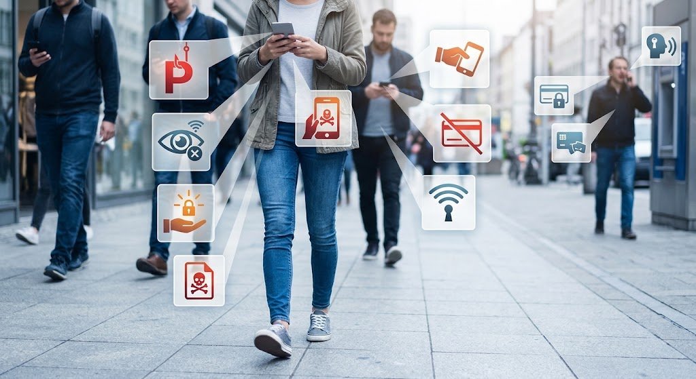
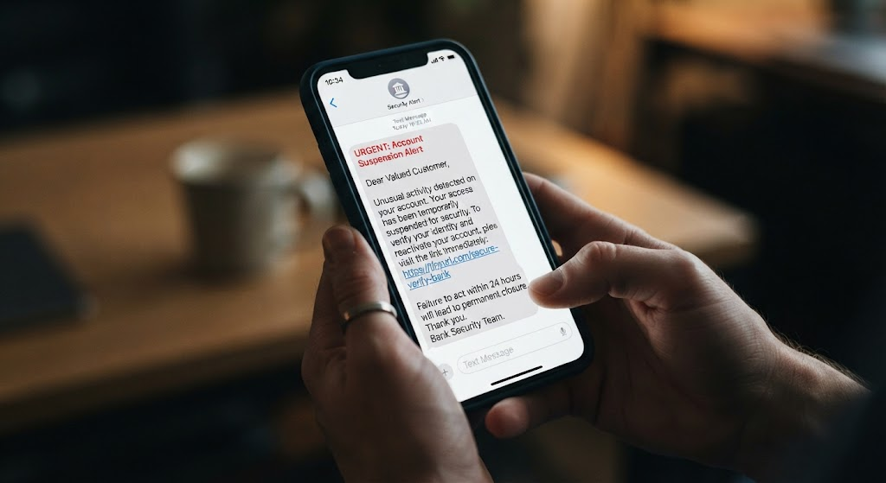
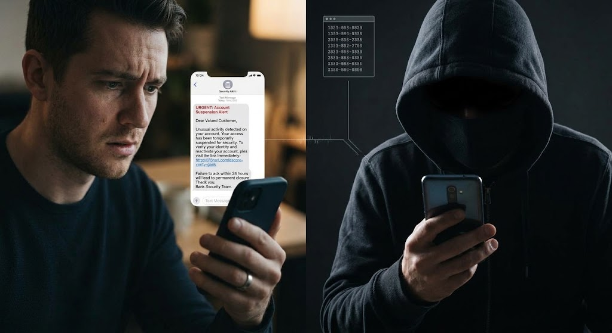
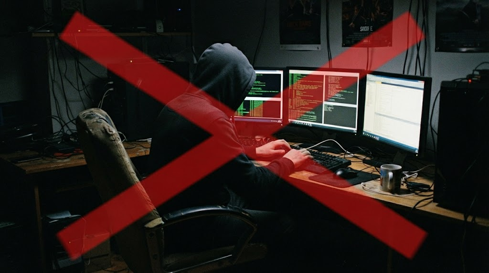
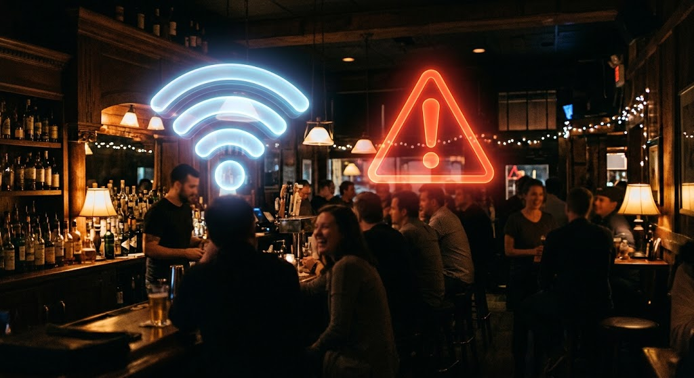
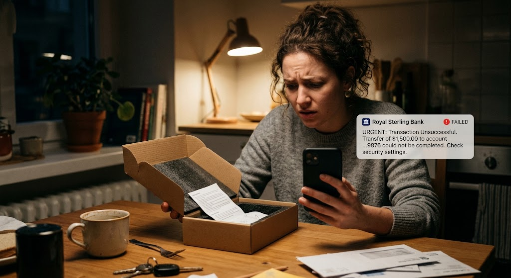
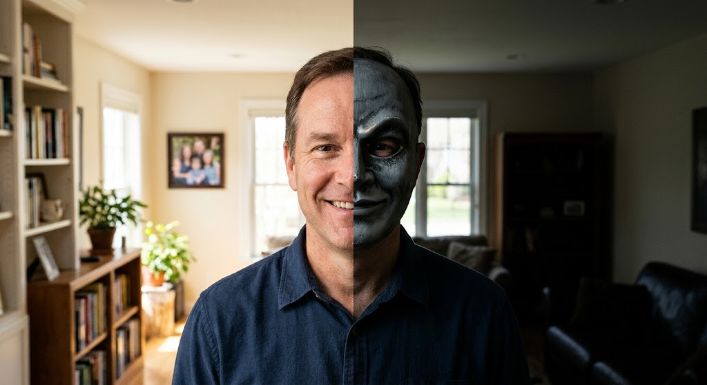
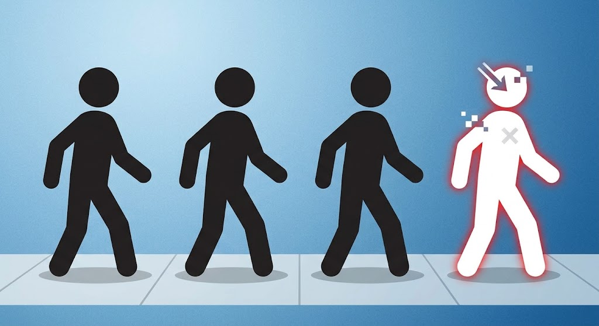
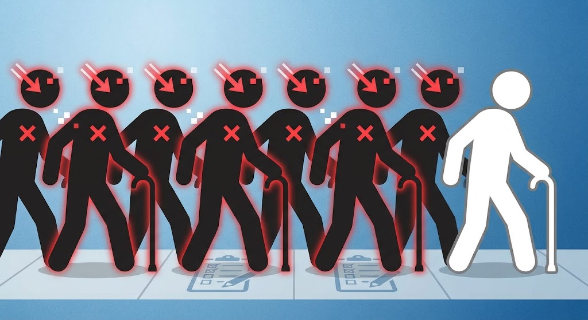
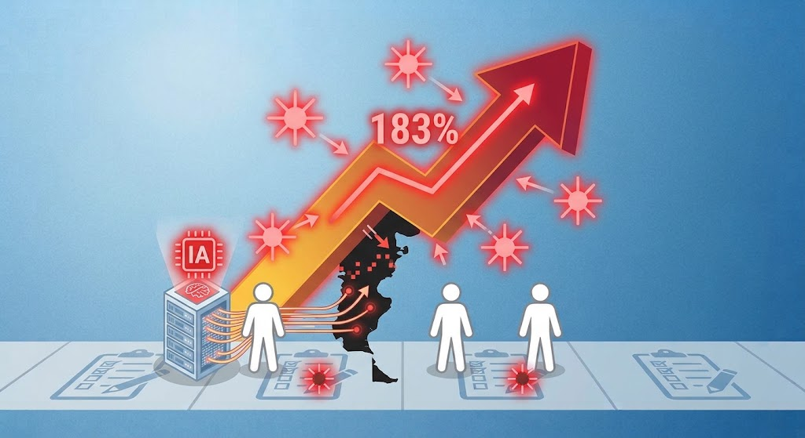

Amenazas cibernéticas en la vida diaria
Los ataques no avisan: llegan por un mensaje, un llamado, una descarga o una oferta. Aca vas a ver por donde te pueden llegar, como se ven en una situacion real y que hacer en ese momento.

Nota: Esta imagen fue generada con inteligencia artificial. (Gemini)
¿Por donde te pueden llegar?
| El Canal por donde ocurre | Lo que intenta parecer | Lo que realmente es |
|---|---|---|
| Puede ser correo electronico o mensajes de texto | Aviso de tu banco sobre algun problema | Un engaño para robarte tus datos |
| Whatsapp o Telegram | Un conocido pidiendo ayuda o pidiendote un codigo | Un intento de robo de tu cuenta |
| Llamado a tu numero telefonico | Puede ser soporte tecnico del banco o alguna empresa | Manipulacion inteligente para tratar de robarte las claves |
| Descargas de archivos o apps | Programas o juegos piratas | Software danino con virus,keyloggers u otras cosas |
| Wi-fi publico | Internet gratis en algun local (como un bar o plaza) | Red insegura que podrian espiarte o ver que haces |
| Compras y ventas online | Un precio muy barato por un articulo o un comprobante de pago | Una estafa donde nunca se realiza el pago o nunca llega el articulo |
| Redes sociales | Un perfil o mensaje de una persona normal | Cuenta falsa o robada de otra persona |
Siete situaciones que pueden pasarte

Phishing y smishing
1. Te llega un mensaje urgente del banco
La situacion: un SMS dice "Detectamos un acceso sospechoso, ingresa aca para evitar el bloqueo".
Senales de alerta
- Te apura o te amenaza con bloquear algo.
- El enlace no es la direccion oficial.
- No te llama por tu nombre.
Que hacer
- No toques el enlace.
- Entra escribiendo vos la web o la app oficial.
- Si dudas, llama al numero que figura en tu tarjeta.
2. Un contacto te pide "un codigo que te llego por error"
La situacion: un amigo (en realidad una cuenta ya robada) te escribe: "Te llego un codigo por SMS, ¿me lo pasas?". Si lo das, te roban tu WhatsApp.
Esto es ingenieria social: no hackean tu celular, te convencen a vos de que les des la llave.
Senales de alerta
- Te pide un codigo de verificacion.
- Dice "cambie de numero" o pide plata urgente.
- Escribe distinto a como lo hace siempre.
Que hacer
- Nunca compartas un codigo, ni con conocidos.
- Llama a esa persona para confirmar.
- Activa la verificacion en dos pasos de WhatsApp.


Ingenieria social, version llamada
3. Te llaman de "soporte" o del "banco"
La situacion: alguien te dice que hay un problema con tu cuenta o tu computadora y te pide instalar un programa o decirle una clave "para ayudarte".
Como darte cuenta: es un llamado que vos no pediste, te presiona para actuar ya y te pide claves, codigos o acceso remoto.
Que hacer: corta sin discutir y llama vos al numero oficial. Un banco nunca te pide tu clave por telefono.
Malware y ransomware
4. Descargas algo "gratis" y tu equipo empieza a fallar
La situacion: bajas un juego pirata o abris un adjunto inesperado. Despues aparece publicidad por todos lados o, peor, tus archivos quedan bloqueados con un pedido de rescate.
Senales de alerta
- Programas "crackeados" o de sitios desconocidos.
- Equipo lento o con programas que no instalaste.
- Archivos que no abren o un mensaje que pide dinero.
Que hacer
- Instala solo desde tiendas y sitios oficiales.
- Hace copias de seguridad fuera de tu computadora.
- Si te pasa, desconectate de internet.
- No pagues el rescate.
Redes abiertas
5. Te conectas al Wi-Fi gratis de un bar o un aeropuerto
La situacion: aparece una red con un nombre parecido al del lugar. Si es falsa o esta abierta, otra persona puede ver lo que haces mientras estas conectado.
Desconfia de las redes sin contrasena, de las que tienen nombres repetidos y de las que te piden datos personales para conectarte.
Que hacer
- Pregunta en el local cual es la red oficial.
- No entres al banco ni hagas pagos en una red publica.
- Usa tus datos moviles para lo importante.


Estafa en linea
6. Encontras una ganga o te "pagan" con un comprobante
La situacion: vendes algo y el comprador te manda una captura de transferencia, pero la plata nunca llego. O compras un celular a mitad de precio y el vendedor desaparece.
Senales de alerta
- Precios demasiado buenos para ser verdad.
- Te pide pagar fuera de la plataforma.
- Te presiona porque "hay mas interesados".
- El comprobante llega por captura y no ves la plata en tu cuenta.
Que hacer
- Entrega el producto solo cuando veas la plata en tu cuenta.
- Paga con medios protegidos.
- Revisa la reputacion del vendedor.
Robo de cuentas y suplantacion
7. Alguien entra a tu cuenta o se hace pasar por vos
La situacion: te llega un aviso de inicio de sesion que no hiciste, o un amigo te cuenta que hay un perfil con tus fotos pidiendo plata.
Como darte cuenta: avisos de acceso desde lugares o equipos raros, mensajes enviados desde tu cuenta que no escribiste o perfiles nuevos con tu nombre y tus fotos.
Que hacer: cambia la clave y activa la verificacion en dos pasos, reporta el perfil falso a la red social y avisa a tus contactos para que no caigan.

Nota: las imagenes de esta seccion fueron generadas con inteligencia artificial. (Gemini)
Estadisticas sobre estafas en Argentina en el 2025 y 2026
Aca algunas cifras de que tan normal son los robos en la actualidad del pais.

1 de cada 4 Argentinos fue victima de un ciberataque
El 24,9% de los argentinos, es decir 1 de cada 4, ya fue victima de un ciberdelito y el 56,7% conoce a una persona cercana que atraveso esa situacion, en un escenario donde las redes sociales y las comunicaciones cotidianas se convirtieron en la principal via de contacto para las estafas.

9 de cada 10 adultos mayores son blancos de estafas digitales.
BTR Consulting realizo una encuesta acerca de los adultos mayores. El 50% de las personas de 60 anos en adelante usa internet para todas sus actividades, el 48% accede desde su celular y el 63% opera con desconfianza

En Argentina, las estafas de ingenieria social subieron 183% impulsadas por IA generativa
el avance de deepfakes y el phishing con inteligencia artificial elevo la efectividad de los enganos en el pais y en America Latina, con subas de 66% y de hasta 155% en la region segun informes sectoriales
Nota: las imagenes de esta seccion fueron generadas con inteligencia artificial. (Gemini)
¿Que pasa si ya caiste en una trampa?
Le puede pasar a cualquiera. Lo que importa es actuar rapido y en este orden.